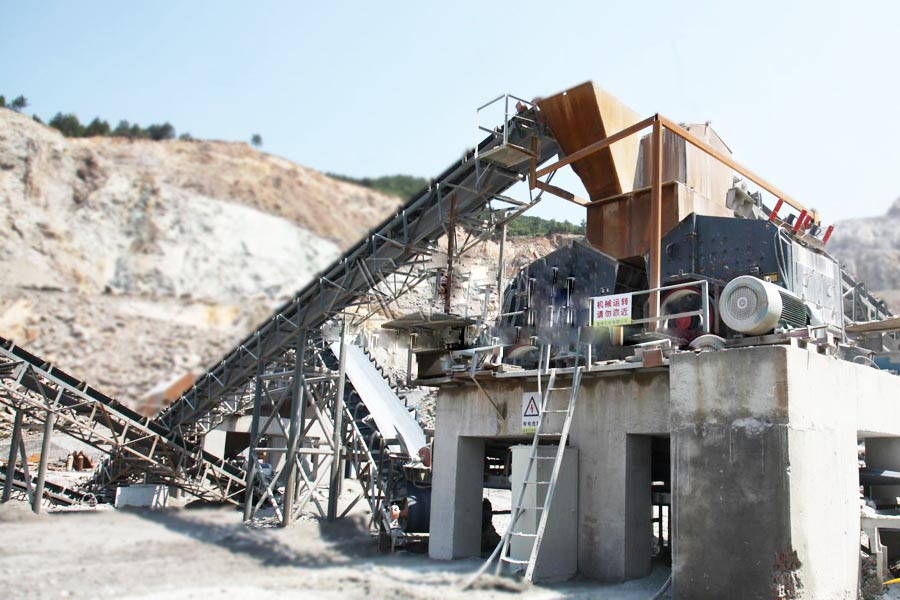
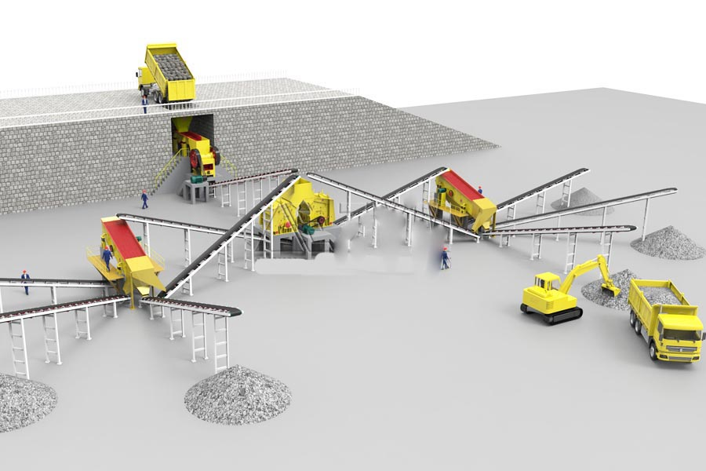

- Home >
- production line >
- automatic stone crusher plant
automatic stone crusher plant

Stone crusher for crushing limestone, pebbles, granite, basalt
Construction waste crushing production line

Mobile construction waste crushing station for urban construction waste crushing.
automatic stone crusher plant
automatic stone crusher plant introduced
automatic stone crusher plant is a special equipment for production of building sand and stone, energy-saving than traditional stone 50%. It can rock, stone, River gravel and other materials made with sand for construction requirements of various size, made of automatic stone crusher plant of sand particle size uniformity, high compressive strength than natural sand, common hammer type sandblasting machine produced sand to meet construction requirements, can improve the quality of construction. Machine-made automatic stone crusher plant equipment with reliable performance, reasonable design, easy operation and high work efficiency.

System structure
First, feeding system
The system is to the crusher equipment and screening the raw material-feeding, according to the crushing and screening process. Complete feed link device with vibration feeder or other type of feeding equipment. Stone production line, is commonly used for feeding equipment is responsible for is the supply of stones.
Second, crushing system
The heart of the system is a range of equipment. Its works are all granularity required for crushing ore into finished products, a combined stone production line can have more than one broken machine. These broken mechanical properties together to complete the stone crushing.
Third, sieving and conveying systems
The system will be broken after the ore by screening mechanical screening. In stone materials production lines in the sand and stone need to be separated from the, and graded aggregate material need transportation to their respective sites. Equipment used in this process are generally linear vibrating screen or other screening equipment.
The production process
Stone line in work process in the, chunks stone by material warehouse by vibration to material machine uniform to sent into jaw type broken machine for rough broken, rough broken Hou of stone by tape conveying machine into cone broken machine (or counter type broken machine) for in the broken, in the broken Hou of stone by tape conveying machine sent into Shaker for screening, finished sand (screen Xia real) by tape conveying machine sent to wash sand machine cleaning Hou again through tape conveying machine sent to finished material heap; big particles stone (screen Shang real) by tape conveying machine sent to vertical impact broken machine (stone machine) Fine, fine stone after screening by the belt again into the Shaker, which form a closed loop multiple times.
Stone production line configuration table
| Maximum feed（mm） | Processing capacity（t/h) | Major equipment specifications | |||||
| Feeding equipment | Crushing equipment(I) | Crushing equipment(II) | Screening Equipment | Conveyor | Installed power(kw) | ||
| 340 | 30 |
GZD2511 (3kw) |
PE400×600 (30kw) |
PF1007 (45kw) |
3YZ1236 (15kw) |
60-90 (20kw) | 120 |
| 340 | 50 |
GZD3117 (10kw) |
PE400×600 (30kw) |
PF1007 (45kw) |
3YZ1545 (22kw) |
100-130 (30kw) |
140 |
| 420 | 80 |
GZD3617 (10kw) |
PE500×750 (55kw) |
PF1010 (75kw) |
3YZ1548 (22kw) |
130-160 (30kw) |
200 |
| 480 | 100 |
GZD4321 (13kw) |
PE600×900 (75kw) |
PF1210 (130kw) |
3YZ1548 (22kw) |
140-180 (40kw) |
280 |
| 560 | 150 |
GZD4321 (13kw) |
PE750×1060 (90kw) |
PF1210 (130kw) |
3YZ1845 (22kw) |
200-240 (50kw) |
300 |
| 630 | 200 |
GZD4321 (13kw) |
PE900×1060 (110kw) |
PFB1212 (140kw) |
3YZ2050 (30kw) |
200 (40kw) |
350 |
| 630 | 250 |
GZD5027 (17kw) |
PE900×1060 (110kw) |
PFB1214 (180kw) |
3YZ2050 (30kw) |
200 (40kw) |
400 |
| 630 | 300 |
GZD502 7(17kw) |
PE900×1200 (110kw) |
PFB1214 (180kw) |
3YZ2160 (30kw) |
250 (50kw) |
450 |
| 700 | 350 |
GZD5027 (17kw) |
PE1000×1200 (132kw) |
PFB1315 (250kw) |
3YZ2160 (30kw) |
250 (50kw) |
500 |
| 700 | 450 |
GZD6223 (28kw) |
PE1000×1200 (132kw) |
PFB1214/2 (300kw) |
3YZ2145/2 (60kw) |
350 (60kw) |
600 |

Performance characteristics
Stone production line a high degree of automation, low operating costs, high crushing ratio, energy production, and less pollution, simple maintenance, machine produced sand stones meet national building standards, uniform product size, grain shape, grading and reasonable.
Stone production line, sand and equipment in addition to equipment uptime downtime and maintenance Besides, almost without human action. Its high production efficiency, low running cost, production, and earnings are high, uniform particle size of finished stone, grain shape, meet the national high speed material requirements.
Stone line, sand equipment in process of design in the, due to levels broken equipment match reasonable, and rigorous of space cross layout, so it has accounted for to area small, investment economic high, gravel material quality good, stone powder output low of features for, while distribution has advanced of electric control operating system, ensure has whole process out material unobstructed, run reliable, operation convenient, efficient energy-saving.
Leave Me A Message, Now
If you have any questions regarding equipment prices, production line configuration or other problems, you can send a message to us, we will contact you soon.